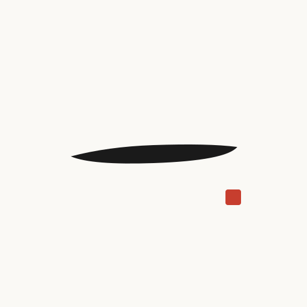

Kai's Hitorigaisha
A one-person project. Several coworkers. None of them human.
status: planning · v0
| AGENT | ASSIGNMENT | STATUS |
|---|---|---|
| briefing-agent | morning briefings | SCHEDULED |
| dev-agent | issue → pull request | PLANNED |
| chief-of-staff | weekly reports | PLANNED |
| kai (CEO) | designing all of this | IN FLIGHT █ |
Kai's Hitorigaisha is a one-person experiment: AI agents working as real coworkers — real processes doing real work in real containers, not chat windows and not pixel-art villagers. Every action an agent takes is a structured event, anything irreversible waits for the CEO's approval, and the whole operation is observable from a single board that owes more to airport departure screens than to video games.
The first project, Hitorigaisha OS, is the infrastructure underneath: an event bus, a task queue, an approval flow, and the board itself. It is currently in the planning stage — this site will grow as the project does.
Project charter
Abstract, not anthropomorphic
Agents appear as processes and departments, never as characters. The visual reference is a departure board, not a game village.
Real work first
Every cell on the board maps to a real task running in a real container. Better ugly than fake.
Observability is a first-class citizen
Every tool call, output, and failure is a structured event. The event stream comes first; the visualization is just a view of it.
Human in the loop
Sending mail, touching production, spending money — anything irreversible is held for the CEO's approval.
Simple and general
A restrained interface, one event schema, an architecture meant to run for ten years. No framework-chasing.
Designed in the open
The roadmap, the wild ideas, and eventually the code all live in the organization's repositories.
Kai's Hitorigaisha on GitHub